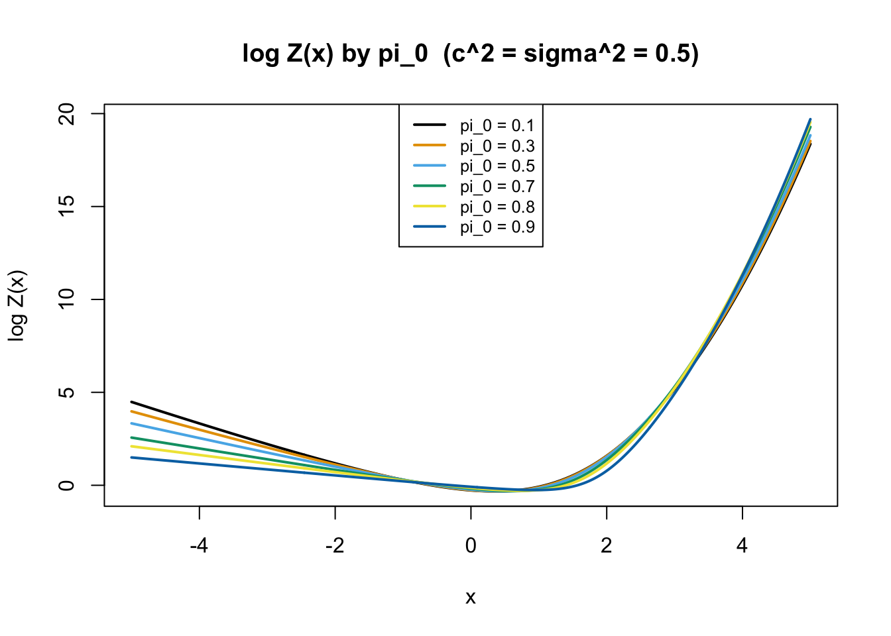
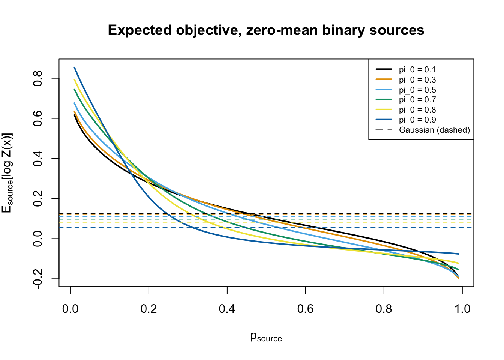
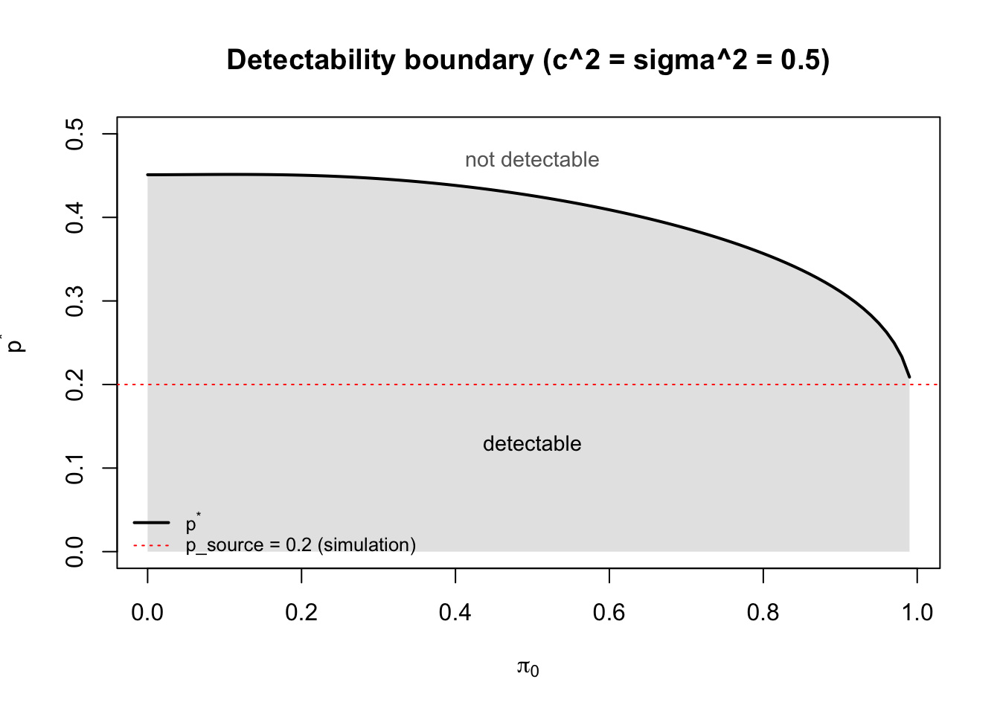
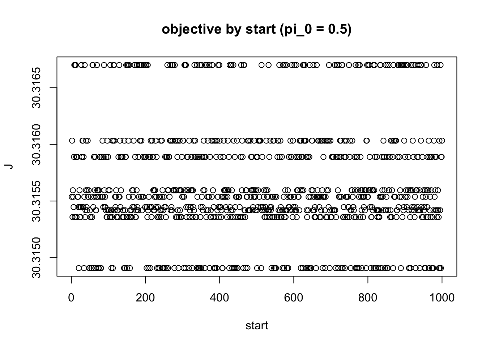
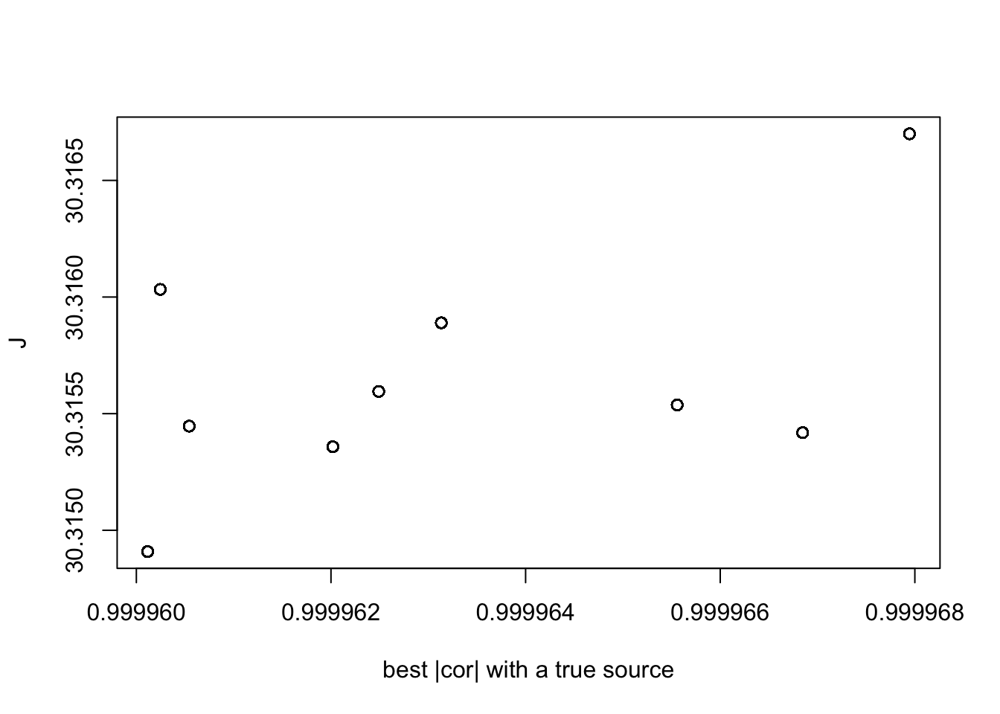
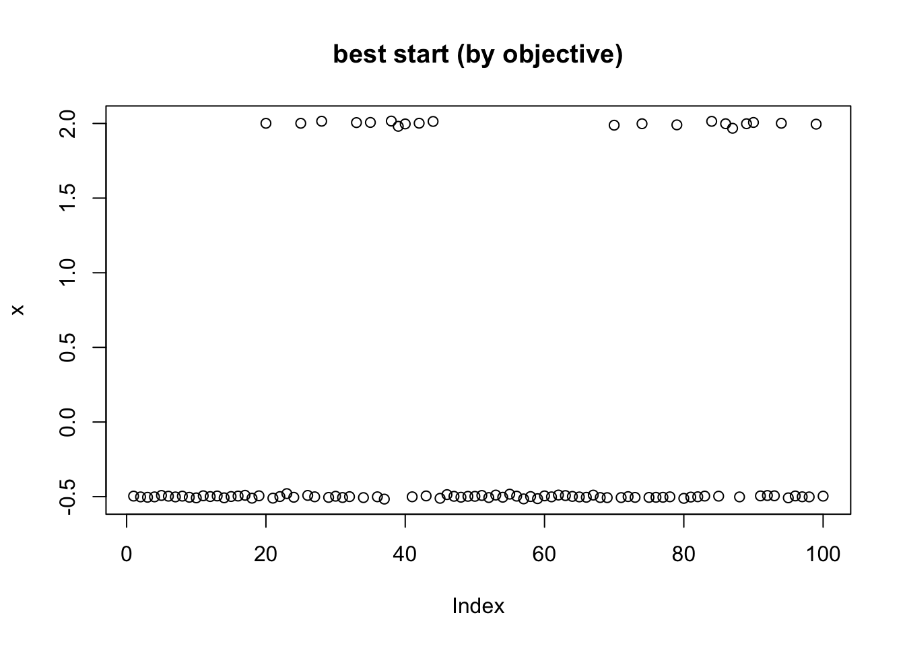
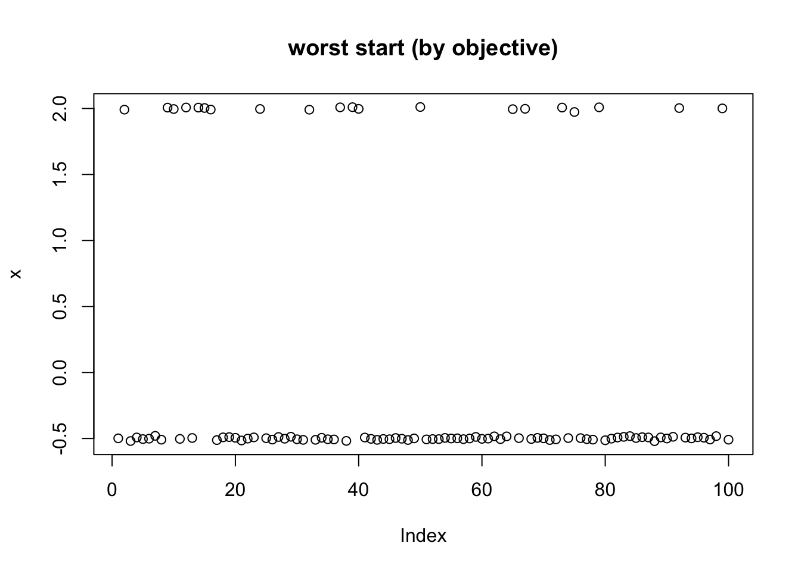
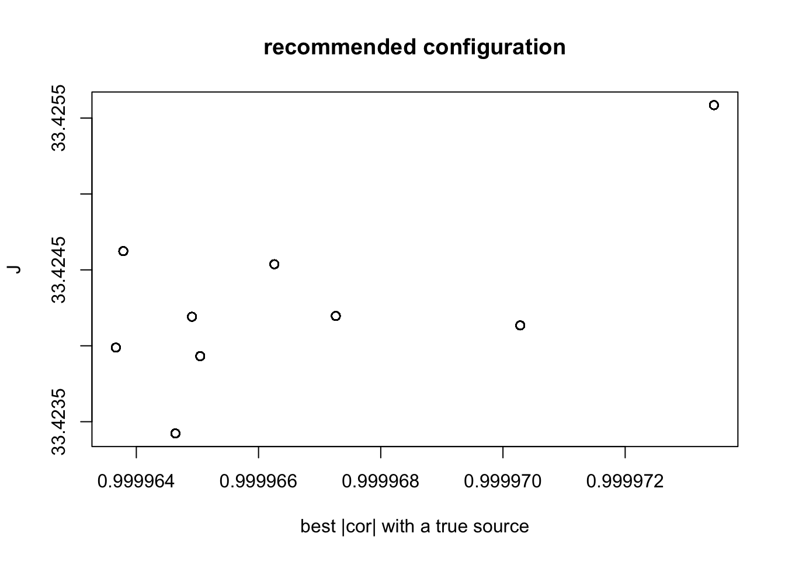
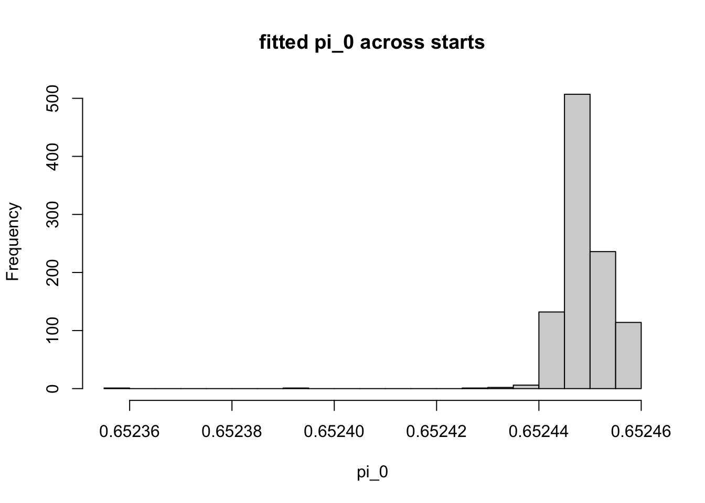
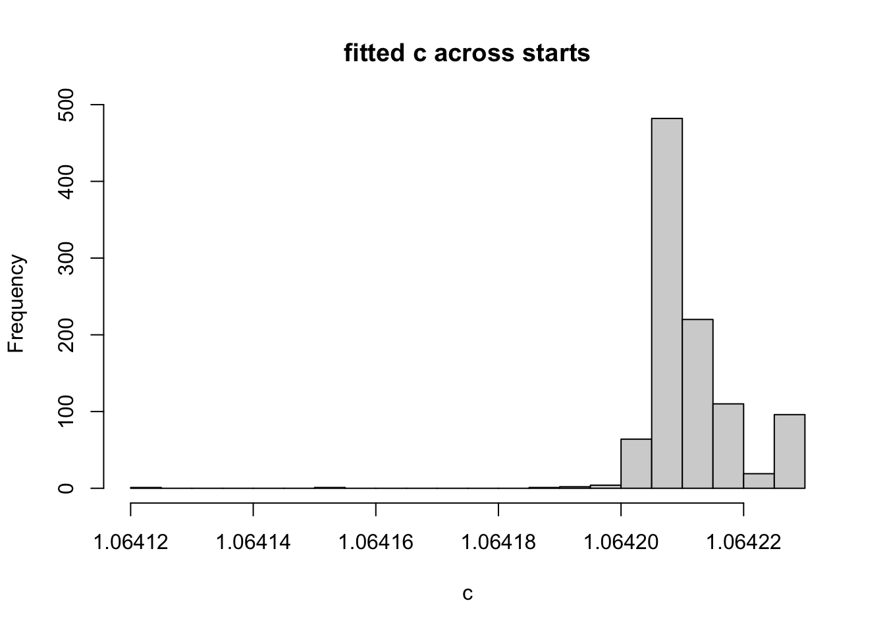

Implementation
Everything is vectorised over columns: P is an \(n \times m\) matrix of \(x\) values (one column per start) and the hyperparameters may be scalars or length-\(m\) vectors, so that each start can carry its own \((\pi_0, c, \sigma^2)\).
pe_v0 = function(pi0) 2*(1-pi0) - (1-pi0)^2 # Var of the Exp(1) spike-and-slab
# broadcast length-1 or length-m vector to an n x m matrix (constant down columns)
pe_bc = function(v, n, m)
if (length(v) == 1) matrix(v, n, m) else matrix(v, n, m, byrow = TRUE)
# Per-observation posterior quantities for the centred, unit-variance
# point-exponential base prior scaled by c (so Var(g) = c^2).
pe_stats = function(P, pi0, cc, s2) {
n = nrow(P); m = ncol(P)
pi0 = pmin(pmax(pi0, 1e-6), 1 - 1e-6)
PI0 = pe_bc(pi0, n, m); CC = pe_bc(cc, n, m); S2 = pe_bc(s2, n, m)
SS = CC / sqrt(pe_v0(PI0)) # exponential scale s
SIG = sqrt(S2)
MU = SS * (1 - PI0) # centring shift: the atom sits at -MU
MM = P + MU - S2 / SS # mean of the untruncated normal in u
Z = MM / SIG
logPhi = pnorm(Z, log.p = TRUE)
l0 = log(PI0)
l1 = log1p(-PI0) - log(SS) + 0.5*log(2*pi*S2) + MM^2/(2*S2) + logPhi
mx = pmax(l0, l1)
logA = mx + log(exp(l0 - mx) + exp(l1 - mx))
pi1 = exp(l1 - logA) # posterior P(slab)
lam = exp(dnorm(Z, log = TRUE) - logPhi) # inverse Mills ratio phi/Phi
m1 = MM + SIG*lam # E[u | slab]
v1 = pmax(S2*(1 - Z*lam - lam^2), 0) # Var[u | slab]
Eu = pi1*m1
Eu2 = pi1*(v1 + m1^2)
list(logZ = -(2*P*MU + MU^2)/(2*S2) + logA,
pi1 = pi1,
M = Eu - MU, # posterior mean of theta
Mp = pmax(Eu2 - Eu^2, 0) / S2, # dM/dx = Var(theta)/sigma^2
M2 = Eu2 - 2*MU*Eu + MU^2, # E[theta^2]
m1 = m1, s = SS)
}
pe_logZ = function(x, pi0, cc, s2)
as.vector(pe_stats(matrix(x, ncol = 1), pi0, cc, s2)$logZ)
Objective and Newton update
U is \(k \times n\) (rows scaled so \(\sum_i U_{ji}^2 = n\)) and W is \(k \times m\), as in 04. Since we only care about centred sources there is no intercept row.
# J = sum_i log Z(x_i), returned as a length-m vector
pe_objective = function(U, W, pi0, cc, s2)
colSums(pe_stats(crossprod(U, W), pi0, cc, s2)$logZ)
# EBproj objective F = nu/2 (log tau - tau + 1) + J, with tau = n/(nu sigma^2)
pe_ebproj_objective = function(U, W, pi0, cc, s2, nu, n) {
tau = n / (nu * s2)
(nu/2)*(log(tau) - tau + 1) + pe_objective(U, W, pi0, cc, s2)
}
# Newton update with the fastICA ("ica") diagonal Hessian approximation
pe_newton_update = function(U, W, pi0, cc, s2, hessian = "ica") {
st = pe_stats(crossprod(U, W), pi0, cc, s2)
Wn = U %*% st$M
if (hessian == "ica") Wn = Wn - sweep(W, 2, colSums(st$Mp), "*")
sweep(Wn, 2, sqrt(colSums(Wn^2)) + 1e-15, "/")
}
Hyperparameter updates
Two families are provided.
Grid updates do exact coordinate ascent in \(J\) for \(\pi_0\) and \(c\). Since \(x = U^Tw\) does not change during a hyperparameter update, a whole grid can be swept for all starts at once, so the cost is (grid size) matrix passes per iteration. A parabolic refinement around the best grid point gives sub-grid resolution.
EM updates are the exact EM updates for the point-exponential in \(u\)-space holding the centring shift \(\mu\) fixed at its current value, after which \(\mu\) is recomputed. Because the constraint \(\mu = s(1-\pi_0)\) couples \(\mu\) to \((\pi_0, c)\), this is not an exact EM for the constrained model and is not guaranteed to increase \(J\) — but it is \(O(n)\) rather than \(O(n\times\text{grid})\), and (see below) it turns out to behave considerably better than exact coordinate ascent.
# vectorised 1-D maximiser: grid sweep + parabolic refinement.
# f(t) returns a length-m vector of objective values at transformed value t.
pe_opt_1d = function(f, grid, m) {
G = length(grid); V = matrix(0, G, m)
for (g in seq_len(G)) V[g, ] = f(grid[g])
i = max.col(t(V), ties.method = "first")
ii = seq_len(m); step = grid[2] - grid[1]
v0 = V[cbind(pmax(i-1,1), ii)]; v1 = V[cbind(i, ii)]; v2 = V[cbind(pmin(i+1,G), ii)]
den = v0 - 2*v1 + v2
off = ifelse(abs(den) > 1e-12 & i > 1 & i < G, 0.5*(v0 - v2)/den, 0)
list(par = grid[i] + pmin(pmax(off, -1), 1)*step, at_edge = (i == 1 | i == G))
}
logit = function(p) log(p/(1-p)); expit = function(z) 1/(1+exp(-z))
pe_update_pi0_grid = function(P, pi0, cc, s2,
grid = seq(logit(0.01), logit(0.99), length.out = 31))
expit(pe_opt_1d(function(t) colSums(pe_stats(P, expit(t), cc, s2)$logZ), grid, ncol(P))$par)
pe_update_c_grid = function(P, pi0, cc, s2,
grid = seq(log(0.05), log(5), length.out = 31))
exp(pe_opt_1d(function(t) colSums(pe_stats(P, pi0, exp(t), s2)$logZ), grid, ncol(P))$par)
# EM-style update of (pi0, c), holding the centring shift fixed within the step
pe_update_g_em = function(P, pi0, cc, s2, update_pi0 = TRUE, update_c = TRUE) {
st = pe_stats(P, pi0, cc, s2)
ss = cc / sqrt(pe_v0(pi0))
if (update_c) ss = colSums(st$pi1 * st$m1) / colSums(st$pi1)
if (update_pi0) pi0 = pmin(pmax(colMeans(1 - st$pi1), 1e-6), 1 - 1e-6)
list(pi0 = pi0, c = ss * sqrt(pe_v0(pi0)))
}
# sigma^2 via the EBproj fixed point tau = 1/(1-rho), rho = vbar' P vbar / U_q.
# In this parameterisation P_proj = U'U/n, so rho = ||U M||^2 / (n * sum(M2)).
pe_update_s2 = function(U, P, pi0, cc, s2, nu, n, rho_max = 0.999) {
st = pe_stats(P, pi0, cc, s2)
rho = colSums((U %*% st$M)^2) / (n * colSums(st$M2))
n / (nu * (1/(1 - pmin(rho, rho_max))))
}
Main parallel loop
pe_fit = function(U, n_starts = 100, n_iter = 50, pi0 = 0.5, cc = sqrt(0.5), s2 = 0.5,
b = 0, W = NULL, update_pi0 = FALSE, update_c = FALSE,
update_s2 = FALSE, g_method = c("grid", "em"),
hessian = "ica", trace = FALSE) {
g_method = match.arg(g_method)
k = nrow(U); n = ncol(U); nu = n - k - 2*b
if (is.null(W)) {
W = matrix(rnorm(k*n_starts), k, n_starts)
W = sweep(W, 2, sqrt(colSums(W^2)), "/")
}
m = ncol(W)
pi0 = rep(pi0, length.out = m); cc = rep(cc, length.out = m); s2 = rep(s2, length.out = m)
Jtr = if (trace) matrix(NA_real_, n_iter, m) else NULL
for (it in seq_len(n_iter)) {
P = crossprod(U, W)
if (update_s2) s2 = pe_update_s2(U, P, pi0, cc, s2, nu, n)
if (update_pi0 || update_c) {
if (g_method == "em") {
g = pe_update_g_em(P, pi0, cc, s2, update_pi0, update_c); pi0 = g$pi0; cc = g$c
} else {
if (update_pi0) pi0 = pe_update_pi0_grid(P, pi0, cc, s2)
if (update_c) cc = pe_update_c_grid(P, pi0, cc, s2)
}
}
W = pe_newton_update(U, W, pi0, cc, s2, hessian = hessian)
if (trace) Jtr[it, ] = pe_objective(U, W, pi0, cc, s2)
}
list(W = W, pi0 = pi0, c = cc, s2 = s2, nu = nu, n = n, k = k,
J = pe_objective(U, W, pi0, cc, s2),
F = pe_ebproj_objective(U, W, pi0, cc, s2, nu, n), Jtrace = Jtr)
}
Numerical checks
Check \(\log Z\) against brute-force numerical integration, \(M\) against \(\sigma^2\,\partial_x \log Z\), \(M'\) against \(\partial_x M\), and confirm that the prior really does have mean 0 and variance \(c^2\).
logZ_num = function(x, pi0, cc, s2) {
ss = cc/sqrt(pe_v0(pi0)); mu = ss*(1-pi0)
f = function(th) exp((2*x*th - th^2)/(2*s2)) * (1/ss)*exp(-(th+mu)/ss)
log(pi0*exp((2*x*(-mu) - mu^2)/(2*s2)) +
(1-pi0)*integrate(f, -mu, Inf, rel.tol = 1e-12)$value)
}
xs = c(-3, -1, -0.2, 0, 0.5, 1, 3, 6)
pars = list(c(0.5, sqrt(0.5), 0.5), c(0.2, 0.3, 0.7), c(0.9, 1.5, 0.2), c(0.05, 0.8, 1.3))
for (p in pars) {
pi0 = p[1]; cc = p[2]; s2 = p[3]; h = 1e-5
a = pe_logZ(xs, pi0, cc, s2)
b = sapply(xs, logZ_num, pi0 = pi0, cc = cc, s2 = s2)
st = pe_stats(matrix(xs, ncol = 1), pi0, cc, s2)
Mnum = s2*(pe_logZ(xs+h, pi0, cc, s2) - pe_logZ(xs-h, pi0, cc, s2))/(2*h)
Mpnum = (pe_stats(matrix(xs+h, ncol=1), pi0, cc, s2)$M -
pe_stats(matrix(xs-h, ncol=1), pi0, cc, s2)$M)/(2*h)
set.seed(1); N = 2e6
th0 = ifelse(runif(N) < pi0, 0, rexp(N))
g = cc*(th0 - (1-pi0))/sqrt(pe_v0(pi0))
cat(sprintf("pi0=%.2f c=%.2f s2=%.2f | logZ err %.1e | M err %.1e | Mp err %.1e | prior mean %.4f var %.4f (target 0, %.4f)\n",
pi0, cc, s2, max(abs(a-b)), max(abs(st$M-Mnum)), max(abs(st$Mp-Mpnum)),
mean(g), var(g), cc^2))
}
pi0=0.50 c=0.71 s2=0.50 | logZ err 8.9e-16 | M err 1.4e-10 | Mp err 8.5e-11 | prior mean 0.0004 var 0.5008 (target 0, 0.5000)
pi0=0.20 c=0.30 s2=0.70 | logZ err 1.8e-15 | M err 1.1e-10 | Mp err 2.1e-10 | prior mean 0.0003 var 0.0902 (target 0, 0.0900)
pi0=0.90 c=1.50 s2=0.20 | logZ err 2.8e-14 | M err 4.3e-10 | Mp err 6.4e-10 | prior mean 0.0002 var 2.2598 (target 0, 2.2500)
pi0=0.05 c=0.80 s2=1.30 | logZ err 1.6e-15 | M err 2.2e-10 | Mp err 1.1e-10 | prior mean 0.0005 var 0.6410 (target 0, 0.6400)
All agree to essentially machine precision.
Shape of the objective
log Z(x) for a range of \(\pi_0\), at the default \(c^2 = \sigma^2 = 0.5\). Unlike the binary case these curves are strongly asymmetric: they are close to linear on the left (where the atom dominates) and curve upward on the right (where the slab dominates). Larger \(\pi_0\) gives a sharper knee.
c_val = sqrt(0.5); s2_val = 0.5
pi0s = c(0.1, 0.3, 0.5, 0.7, 0.8, 0.9)
cols = palette.colors(length(pi0s), palette = "Okabe-Ito")
x_grid = seq(-5, 5, length.out = 500)
logZ_mat = sapply(pi0s, function(q) pe_logZ(x_grid, q, c_val, s2_val))
matplot(x_grid, logZ_mat, type = "l", lty = 1, col = cols, lwd = 2,
xlab = "x", ylab = "log Z(x)", main = "log Z(x) by pi_0 (c^2 = sigma^2 = 0.5)")
legend("top", legend = paste0("pi_0 = ", pi0s), col = cols, lty = 1, lwd = 2, cex = 0.8)

Expected objective by source type
We restrict attention throughout to centred (zero-mean) sources, so there is no intercept to profile over. For a zero-mean binary source with weight \(p_\text{s}\) and unit variance the atoms are \[a_0 = -p_s d, \quad a_1 = (1-p_s)d, \quad d = \frac{1}{\sqrt{p_s(1-p_s)}},\] i.e. the usual \(a_1 = \sqrt{(1-p_s)/p_s}\), \(a_0 = -\sqrt{p_s/(1-p_s)}\). A source is detectable as a maximum of this objective if \(\mathbb{E}[\log Z]\) sits above the standard normal baseline.
E_logZ_binary = function(p_s, pi0, cc, s2) {
a1 = sqrt((1-p_s)/p_s); a0 = -sqrt(p_s/(1-p_s))
(1-p_s)*pe_logZ(a0, pi0, cc, s2) + p_s*pe_logZ(a1, pi0, cc, s2)
}
E_logZ_gauss = function(pi0, cc, s2)
integrate(function(x) pe_logZ(x, pi0, cc, s2)*dnorm(x), -8, 8)$value
p_srcs = c(0.02, 0.05, 0.1, 0.2, 0.3, 0.4, 0.5)
ps_grid = seq(0.01, 0.99, by = 0.01)
E_mat = sapply(pi0s, function(q) sapply(ps_grid, function(ps) E_logZ_binary(ps, q, c_val, s2_val)))
E_gauss = sapply(pi0s, function(q) E_logZ_gauss(q, c_val, s2_val))
matplot(ps_grid, E_mat, type = "l", lty = 1, col = cols, lwd = 2,
xlab = expression(p[source]), ylab = expression(E[source]*"[log Z(x)]"),
main = "Expected objective, zero-mean binary sources")
for (i in seq_along(pi0s)) abline(h = E_gauss[i], col = cols[i], lty = 2, lwd = 1.2)
legend("topright", legend = c(paste0("pi_0 = ", pi0s), "Gaussian (dashed)"),
col = c(cols, "grey50"), lty = c(rep(1, length(pi0s)), 2), lwd = 2, cex = 0.7)

This is qualitatively different from the binary objective, and is the main structural finding of this file. For the binary prior, \(p_\text{obj}\) selected which sources were favoured — \(p_\text{obj}=0.5\) favoured balanced sources, small \(p_\text{obj}\) favoured sparse ones. Here the expected objective is monotone decreasing in \(p_\text{source}\) at every \(\pi_0\): sparse/skewed sources always score above common ones, and \(\pi_0\) only tunes how steeply.
The flip side is that a balanced (\(p_s = 0.5\)) binary source falls below the Gaussian baseline for every \(\pi_0\). So this objective is a detector for skewed sources specifically, and should not be expected to find symmetric ones. That is inherent: the prior is one-sided, so it cannot reward a symmetric source.
for (q in c(0.3, 0.5, 0.7, 0.9)) {
e0 = sapply(p_srcs, function(ps) E_logZ_binary(ps, q, c_val, s2_val))
gb = E_logZ_gauss(q, c_val, s2_val)
cat(sprintf("pi_0=%.1f Gaussian=%.4f | E[logZ] by p_src (%s): %s\n", q, gb,
paste(p_srcs, collapse = " "), paste(sprintf("%.4f", e0), collapse = " ")))
}
pi_0=0.3 Gaussian=0.1212 | E[logZ] by p_src (0.02 0.05 0.1 0.2 0.3 0.4 0.5): 0.5916 0.5063 0.4127 0.2897 0.2069 0.1453 0.0955
pi_0=0.5 Gaussian=0.1109 | E[logZ] by p_src (0.02 0.05 0.1 0.2 0.3 0.4 0.5): 0.6353 0.5501 0.4490 0.3032 0.2009 0.1269 0.0703
pi_0=0.7 Gaussian=0.0928 | E[logZ] by p_src (0.02 0.05 0.1 0.2 0.3 0.4 0.5): 0.7058 0.6146 0.4933 0.2998 0.1677 0.0837 0.0276
pi_0=0.9 Gaussian=0.0557 | E[logZ] by p_src (0.02 0.05 0.1 0.2 0.3 0.4 0.5): 0.8089 0.6891 0.5058 0.2065 0.0648 0.0082 -0.0192
The detectability boundary
Because \(\mathbb{E}[\log Z]\) is monotone decreasing in \(p_\text{source}\), for each \(\pi_0\) there is a single crossing \(p^*(\pi_0)\) at which it meets the Gaussian baseline. Sources with \(p_\text{source} < p^*\) are detectable (they sit above the baseline, so they are maxima of the objective) and those with \(p_\text{source} > p^*\) are not. Plotting \(p^*\) against \(\pi_0\) therefore summarises, in one curve, which sources each \(\pi_0\) can find.
\(\pi_0 = 0\) is included: that is the pure centred exponential slab with no spike, which is perfectly well defined here (\(v_0 = 1\), so \(s = c\)).
p_cross = function(pi0, cc, s2) {
gb = E_logZ_gauss(pi0, cc, s2)
h = function(p) E_logZ_binary(p, pi0, cc, s2) - gb
lo = 1e-4; hi = 1 - 1e-4
if (h(lo) < 0) return(NA_real_) # nothing detectable
if (h(hi) > 0) return(1) # everything detectable
uniroot(h, c(lo, hi), tol = 1e-10)$root
}
pi0_grid = seq(0, 0.99, length.out = 100)
p_star = sapply(pi0_grid, p_cross, cc = c_val, s2 = s2_val)
plot(pi0_grid, p_star, type = "n", ylim = c(0, 0.5),
xlab = expression(pi[0]), ylab = expression(p^"*"),
main = "Detectability boundary (c^2 = sigma^2 = 0.5)")
polygon(c(pi0_grid, rev(pi0_grid)), c(p_star, rep(0, length(p_star))),
col = "grey90", border = NA)
lines(pi0_grid, p_star, lwd = 2)
abline(h = 0.2, lty = 3, col = "red")
text(0.5, 0.13, "detectable", cex = 0.9)
text(0.5, 0.47, "not detectable", cex = 0.9, col = "grey40")
legend("bottomleft", legend = c(expression(p^"*"), "p_source = 0.2 (simulation)"),
col = c("black", "red"), lty = c(1, 3), lwd = c(2, 1), bty = "n", cex = 0.8)

knitr::kable(
data.frame(pi_0 = c(0, 0.1, 0.2, 0.3, 0.4, 0.5, 0.6, 0.7, 0.8, 0.9, 0.95, 0.99),
p_star = round(sapply(c(0, 0.1, 0.2, 0.3, 0.4, 0.5, 0.6, 0.7, 0.8, 0.9, 0.95, 0.99),
p_cross, cc = c_val, s2 = s2_val), 4)),
col.names = c("pi_0", "p*"),
caption = "Largest detectable p_source for each pi_0")
Largest detectable p_source for each pi_0
| 0.00 |
0.4510 |
| 0.10 |
0.4514 |
| 0.20 |
0.4505 |
| 0.30 |
0.4463 |
| 0.40 |
0.4382 |
| 0.50 |
0.4259 |
| 0.60 |
0.4091 |
| 0.70 |
0.3868 |
| 0.80 |
0.3568 |
| 0.90 |
0.3113 |
| 0.95 |
0.2734 |
| 0.99 |
0.2089 |
The shape of this curve is the opposite of what one might guess. Making the prior sparser does not widen the range of sparse sources that can be found: \(p^*\) is essentially flat at about 0.45 for \(\pi_0 \lesssim 0.2\) and then falls, down to about 0.21 by \(\pi_0 = 0.99\). Increasing \(\pi_0\) narrows the detectable set rather than shifting it towards sparser sources. The reason is that the Gaussian baseline is not fixed — it moves with \(\pi_0\) too — and raising \(\pi_0\) pulls the source curves down faster than it pulls the baseline down.
Two practical consequences. First, there may be reason to keep \(\pi_0\) from being too high, certainly there seems no reason to initialize it high. Second, the boundary never reaches 0.5, which is the analytic statement of the earlier remark that a balanced binary source will not be detected by this one-sided objective.
This also explains the somewhat counter-intuitive behaviour in the \(\pi_0\) sweep in the simulation below. The true sources there have \(p_\text{source} = 0.2\) (red line): it sits comfortably inside the detectable region for \(\pi_0 \le 0.7\), is getting close to the boundary by \(\pi_0 = 0.9\) (\(p^* = 0.31\)), and at \(\pi_0 = 0.99\) would be right on it (\(p^* = 0.21\)) — which matches recovery being perfect up to 0.7 and collapsing at 0.9. So maybe matching \(\pi_0\) to the “true” null value is not going to be advantageous in practice? This may require more investigation.
Simulation: nine groups with \(p \approx 0.2\)
The same simulation used in 04: \(K=9\) binary loading vectors, each with 20 non-zero entries among \(n=100\) observations. One deliberate difference from 04: because we are interested in centred sources, U is not augmented with an intercept row. (Essentially I have moved on from my original idea of including an intercept, which I originally introduced to deal with the fact that fastICA with log-cosh cannot find asymmetric sources; we are now fixing that by using asymmetric contrast functions, which in hindsight seems much the preferable route. Indeed, the ICA theory seems to depend on centered sources, so we keep the theory this way).
set.seed(1)
n = 100; p_dim = 1000; K = 9
L = matrix(0, n, K); for (i in 1:K) L[sample(n, 20), i] = 1
FF = matrix(rnorm(p_dim*K), p_dim)
Y = L %*% t(FF) + matrix(rnorm(n*p_dim, 0, 0.1), n)
n.comp = 9
Y = scale(Y, scale = FALSE)
U = sqrt(nrow(Y)) * t(svd(Y)$u[, 1:n.comp])
Fixed hyperparameters
Run 1000 starts in parallel at the default \(\pi_0 = 0.5\), \(c^2 = \sigma^2 = 0.5\).
set.seed(1)
system.time(fit0 <- pe_fit(U, n_starts = 1000, n_iter = 50, trace = TRUE))
user system elapsed
1.240 0.223 1.474
Lhat = crossprod(U, fit0$W)
bestcor = apply(abs(cor(Lhat, L)), 1, max)
plot(fit0$J, xlab = "start", ylab = "J", main = "objective by start (pi_0 = 0.5)")

plot(bestcor, fit0$J, xlab = "best |cor| with a true source", ylab = "J")

cat(sprintf("frac of starts with |cor| > 0.9 : %.2f\n", mean(bestcor > 0.9)))
frac of starts with |cor| > 0.9 : 1.00
cat(sprintf("|cor| at the best-objective start: %.3f\n", bestcor[which.max(fit0$J)]))
|cor| at the best-objective start: 1.000
cat("best |cor| achieved for each true source:\n")
best |cor| achieved for each true source:
print(round(apply(abs(cor(Lhat, L)), 2, max), 3))
[1] 1 1 1 1 1 1 1 1 1
cat(sprintf("frac of (iteration, start) pairs where J decreased: %.5f\n",
mean(diff(fit0$Jtrace) < -1e-8)))
frac of (iteration, start) pairs where J decreased: 0.00014
Every one of the 1000 starts converges to a true source, all nine sources are recovered, the best solution by objective is a true source, and the Newton update is empirically monotone for all but a handful of steps. Plotting the two extreme solutions:
plot(Lhat[, which.max(fit0$J)], ylab = "x", main = "best start (by objective)")

plot(Lhat[, which.min(fit0$J)], ylab = "x", main = "worst start (by objective)")

Sensitivity to \(\pi_0\)
for (q in c(0, 0.02, 0.05, 0.1, 0.3, 0.5, 0.7, 0.8, 0.9)) {
set.seed(1)
f = pe_fit(U, n_starts = 1000, n_iter = 50, pi0 = q, cc = sqrt(0.5), s2 = 0.5)
Lh = crossprod(U, f$W); bcr = apply(abs(cor(Lh, L)), 1, max)
cat(sprintf("pi_0=%.2f : frac>0.9 = %.2f best-obj |cor| = %.3f #sources found = %d\n",
q, mean(bcr > 0.9), bcr[which.max(f$J)], sum(apply(abs(cor(Lh, L)), 2, max) > 0.9)))
}
pi_0=0.00 : frac>0.9 = 1.00 best-obj |cor| = 1.000 #sources found = 9
pi_0=0.02 : frac>0.9 = 1.00 best-obj |cor| = 1.000 #sources found = 9
pi_0=0.05 : frac>0.9 = 1.00 best-obj |cor| = 1.000 #sources found = 9
pi_0=0.10 : frac>0.9 = 1.00 best-obj |cor| = 1.000 #sources found = 9
pi_0=0.30 : frac>0.9 = 1.00 best-obj |cor| = 1.000 #sources found = 9
pi_0=0.50 : frac>0.9 = 1.00 best-obj |cor| = 1.000 #sources found = 9
pi_0=0.70 : frac>0.9 = 1.00 best-obj |cor| = 1.000 #sources found = 9
pi_0=0.80 : frac>0.9 = 0.94 best-obj |cor| = 0.750 #sources found = 9
pi_0=0.90 : frac>0.9 = 0.15 best-obj |cor| = 0.699 #sources found = 6
Recovery is perfect for every \(\pi_0\) from 0 up to 0.7 — including \(\pi_0 = 0\), the pure exponential slab with no spike at all — degrades slightly at 0.8, and falls apart at 0.9 (where only 6 of the 9 sources are found). So the method is insensitive to \(\pi_0\) over a wide range, and \(\pi_0 = 0.5\) remains a reasonable default.
Comparison with the binary prior
The binary code from 04, run on the same data for reference:
binary_newton_update = function(U, W, p = 0.5, c = 2/(1+sqrt(5)), s2 = c) {
y1 = sqrt((1-p)/p); y0 = -sqrt(p/(1-p)); ey0 = c*y0; ey1 = c*y1
P = t(U) %*% W
lp0 = log(1-p) + (2*P*ey0 - ey0^2)/(2*s2)
lp1 = log(p) + (2*P*ey1 - ey1^2)/(2*s2)
m = pmax(lp0, lp1); e0 = exp(lp0-m); e1 = exp(lp1-m); pi1 = e1/(e0+e1)
Mx = (1-pi1)*ey0 + pi1*ey1
Mpx = pi1*(1-pi1)*(ey1-ey0)^2/s2
W = U %*% Mx - sweep(W, 2, colSums(Mpx), "*")
sweep(W, 2, sqrt(colSums(W^2)) + 1e-15, "/")
}
binary_objective = function(U, W, p = 0.5, c = 2/(1+sqrt(5)), s2 = c) {
y1 = sqrt((1-p)/p); y0 = -sqrt(p/(1-p)); ey0 = c*y0; ey1 = c*y1
P = t(U) %*% W
lp0 = log(1-p) + (2*P*ey0 - ey0^2)/(2*s2)
lp1 = log(p) + (2*P*ey1 - ey1^2)/(2*s2)
m = pmax(lp0, lp1); colSums(log(exp(lp0-m) + exp(lp1-m)) + m)
}
for (p in c(0.5, 0.25, 0.1, 0.05)) {
set.seed(1)
W = matrix(rnorm(nrow(U)*1000), nrow(U), 1000)
W = sweep(W, 2, sqrt(colSums(W^2)), "/")
for (i in 1:50) W = binary_newton_update(U, W, p = p)
Lh = crossprod(U, W); bcr = apply(abs(cor(Lh, L)), 1, max); o = binary_objective(U, W, p = p)
cat(sprintf("binary p_obj=%.2f : frac>0.9 = %.2f best-obj |cor| = %.3f #sources = %d\n",
p, mean(bcr > 0.9), bcr[which.max(o)], sum(apply(abs(cor(Lh, L)), 2, max) > 0.9)))
}
binary p_obj=0.50 : frac>0.9 = 0.00 best-obj |cor| = 0.612 #sources = 0
binary p_obj=0.25 : frac>0.9 = 1.00 best-obj |cor| = 1.000 #sources = 9
binary p_obj=0.10 : frac>0.9 = 1.00 best-obj |cor| = 1.000 #sources = 9
binary p_obj=0.05 : frac>0.9 = 0.00 best-obj |cor| = 0.730 #sources = 0
Without the intercept the binary prior also does perfectly — but only at \(p_\text{obj} = 0.25\) and \(0.1\). At \(p_\text{obj} = 0.5\) (i.e. plain fastICA) and at \(p_\text{obj} = 0.05\) it fails completely, recovering none of the nine sources from any of the 1000 starts.
So this example illustrates a key advantage of the point-exponential: robustness to the hyperparameters. The point-exponential is at 100% for every \(\pi_0\) in \([0, 0.7]\) (no spike at all up to a 70% spike), whereas the binary prior has a narrow window around \(p_\text{obj} \approx 0.1\)–\(0.25\) and is useless on either side of it.
Updating the hyperparameters
Now we turn on the updates. b = k/2 is used so that \(\nu = n - k - 2b\) matches the EBproj convention from 03.
run = function(lab, ...) {
set.seed(1); t0 = Sys.time()
f = pe_fit(U, n_starts = 300, n_iter = 50, b = nrow(U)/2, ...)
Lh = crossprod(U, f$W); bcr = apply(abs(cor(Lh, L)), 1, max); im = which.max(f$F)
cat(sprintf("%-22s frac>0.9=%.2f bestF|cor|=%.3f pi0=%.3f c=%.3f s2=%.4f #src=%d (%.1fs)\n",
lab, mean(bcr > 0.9), bcr[im], f$pi0[im], f$c[im], f$s2[im],
sum(apply(abs(cor(Lh, L)), 2, max) > 0.9), as.numeric(Sys.time()-t0, units = "secs")))
invisible(f)
}
run("fixed")
fixed frac>0.9=1.00 bestF|cor|=1.000 pi0=0.500 c=0.707 s2=0.5000 #src=9 (0.2s)
run("pi0 (grid)", update_pi0 = TRUE)
pi0 (grid) frac>0.9=1.00 bestF|cor|=1.000 pi0=0.586 c=0.707 s2=0.5000 #src=9 (6.3s)
run("c (grid)", update_c = TRUE)
c (grid) frac>0.9=1.00 bestF|cor|=1.000 pi0=0.500 c=0.948 s2=0.5000 #src=9 (6.8s)
run("pi0+c (grid)", update_pi0 = TRUE, update_c = TRUE)
pi0+c (grid) frac>0.9=1.00 bestF|cor|=1.000 pi0=0.647 c=1.052 s2=0.5000 #src=9 (13.5s)
run("pi0+c (em)", update_pi0 = TRUE, update_c = TRUE, g_method = "em")
pi0+c (em) frac>0.9=1.00 bestF|cor|=1.000 pi0=0.652 c=1.064 s2=0.5000 #src=9 (0.4s)
run("s2 only", update_s2 = TRUE)
s2 only frac>0.9=1.00 bestF|cor|=1.000 pi0=0.500 c=0.707 s2=0.0104 #src=9 (0.4s)
fit_all_grid = run("all (grid)", update_pi0 = TRUE, update_c = TRUE, update_s2 = TRUE)
all (grid) frac>0.9=0.61 bestF|cor|=1.000 pi0=0.717 c=1.225 s2=0.0012 #src=9 (13.6s)
fit_all_em = run("all (em)", update_pi0 = TRUE, update_c = TRUE, update_s2 = TRUE,
g_method = "em")
all (em) frac>0.9=1.00 bestF|cor|=1.000 pi0=0.796 c=1.485 s2=0.0012 #src=9 (0.7s)
Almost everything works: every configuration except all (grid) recovers a true source from all 300 starts, and all of them put a true source at the global maximum. Three observations.
Updating \(\pi_0\) and \(c\) is safe and well behaved. \(\pi_0\) drifts up from 0.5 to about 0.59–0.65 and \(c\) from 0.707 to about 0.95–1.05, both plausible for sources that are 20% dense.
grid and em reach nearly the same answer. The table above only shows the single best-objective start, so it is not on its own evidence that the two methods agree; the chunk below compares all 300 starts, which are paired (same seed, hence the same starting W).
\(\sigma^2\) drops to about 0.01, but this is correct, not a collapse. The simulation is near-noiseless, so a small \(\sigma^2\) is the right answer; s2 only still recovers a true source from every start. See the section below, where varying the noise confirms the update is tracking it. The one configuration that does suffer is all (grid), which drops to 0.61.
set.seed(1); fg = pe_fit(U, n_starts = 300, n_iter = 50, b = nrow(U)/2,
update_pi0 = TRUE, update_c = TRUE, g_method = "grid")
set.seed(1); fe = pe_fit(U, n_starts = 300, n_iter = 50, b = nrow(U)/2,
update_pi0 = TRUE, update_c = TRUE, g_method = "em")
cat(sprintf("within grid: pi0 sd = %.2e, c sd = %.2e (across 300 starts)\n", sd(fg$pi0), sd(fg$c)))
within grid: pi0 sd = 4.32e-06, c sd = 5.95e-06 (across 300 starts)
cat(sprintf("within em : pi0 sd = %.2e, c sd = %.2e\n", sd(fe$pi0), sd(fe$c)))
within em : pi0 sd = 6.86e-06, c sd = 8.28e-06
cat(sprintf("paired em - grid: pi0 %+.4f (max|.| %.4f), c %+.4f (max|.| %.4f), J %+.4f\n",
median(fe$pi0 - fg$pi0), max(abs(fe$pi0 - fg$pi0)),
median(fe$c - fg$c), max(abs(fe$c - fg$c)), median(fe$J - fg$J)))
paired em - grid: pi0 +0.0053 (max|.| 0.0053), c +0.0124 (max|.| 0.0124), J +0.0032
xg = crossprod(U, fg$W); xe = crossprod(U, fe$W)
same = sapply(seq_len(300), function(i) abs(cor(xg[, i], xe[, i])))
cat(sprintf("paired |cor(x_grid, x_em)|: median %.4f, frac > 0.999 = %.3f, min %.4f\n",
median(same), mean(same > 0.999), min(same)))
paired |cor(x_grid, x_em)|: median 1.0000, frac > 0.999 = 0.970, min 0.0022
Two separate things are going on here, and they are worth keeping apart.
Within a method the 300 starts end up at essentially the same \((\pi_0, c)\) — the standard deviation across starts is around \(10^{-5}\). That is not a degeneracy in the code (the updates are genuinely per-start: mid-run the spread is sd \(\approx 0.02\) in \(\pi_0\), and all 300 final values are distinct). It happens because every start converges to one of the nine true sources, and in this simulation those nine are interchangeable by construction — each is exactly 20/100 dense — so they all imply the same prior. On data with heterogeneous sources this spread would be real, which is the reason for carrying per-start hyperparameters at all.
Between methods the difference is a near-constant offset: em ends about \(+0.005\) higher in \(\pi_0\) and \(+0.012\) higher in \(c\) than grid, i.e. under 1% and about 1% respectively, with em also very slightly higher in \(J\). So “agree” here means agreement to about 1% in the hyperparameters, and the same recovered source for 97% of the paired starts — not on all of them: 3% of pairs end on different sources. Given that, the choice between them is essentially about cost, and em is roughly 30x faster.
Is the \(\sigma^2\) update really collapsing?
nu = ncol(U) - nrow(U) - 2*(nrow(U)/2)
set.seed(1)
Wd = matrix(rnorm(nrow(U)*5), nrow(U), 5); Wd = sweep(Wd, 2, sqrt(colSums(Wd^2)), "/")
pi0d = rep(0.5, 5); ccd = rep(sqrt(0.5), 5); s2d = rep(0.5, 5)
cat("iter | rho (5 starts) | sigma^2\n")
iter | rho (5 starts) | sigma^2
for (it in 1:12) {
P = crossprod(U, Wd); st = pe_stats(P, pi0d, ccd, s2d)
rho = colSums((U %*% st$M)^2)/(ncol(U)*colSums(st$M2))
s2d = pe_update_s2(U, P, pi0d, ccd, s2d, nu, ncol(U))
Wd = pe_newton_update(U, Wd, pi0d, ccd, s2d)
cat(sprintf("%4d | %s | %s\n", it, paste(sprintf("%.4f", rho), collapse = " "),
paste(sprintf("%.4f", s2d), collapse = " ")))
}
1 | 0.3460 0.3708 0.3921 0.3944 0.3647 | 0.7975 0.7674 0.7414 0.7386 0.7747
2 | 0.2864 0.4003 0.3856 0.3630 0.3921 | 0.8702 0.7314 0.7493 0.7768 0.7414
3 | 0.2737 0.5232 0.4142 0.4058 0.4567 | 0.8857 0.5815 0.7143 0.7246 0.6626
4 | 0.3387 0.6590 0.4554 0.4930 0.5656 | 0.8065 0.4158 0.6641 0.6183 0.5298
5 | 0.4246 0.7853 0.4959 0.6184 0.6990 | 0.7017 0.2618 0.6148 0.4654 0.3670
6 | 0.5086 0.8783 0.5404 0.7494 0.8174 | 0.5993 0.1484 0.5604 0.3057 0.2227
7 | 0.6108 0.9346 0.6095 0.8542 0.8986 | 0.4746 0.0797 0.4762 0.1778 0.1236
8 | 0.7356 0.9650 0.7183 0.9208 0.9459 | 0.3225 0.0426 0.3436 0.0966 0.0659
9 | 0.8440 0.9801 0.8294 0.9578 0.9708 | 0.1902 0.0243 0.2080 0.0514 0.0356
10 | 0.9147 0.9868 0.9058 0.9766 0.9827 | 0.1040 0.0161 0.1149 0.0285 0.0211
11 | 0.9546 0.9897 0.9498 0.9853 0.9880 | 0.0553 0.0126 0.0612 0.0179 0.0147
12 | 0.9751 0.9908 0.9727 0.9891 0.9901 | 0.0304 0.0112 0.0333 0.0134 0.0121
\(\rho\) climbs to about 0.99 within a dozen iterations and \(\sigma^2\) falls by almost two orders of magnitude, which looks alarming. It is not: \(\rho \approx 1\) is the right answer for this simulation.
First, note what \(\rho\) actually measures. Since \(UU^T = nI\), the matrix \(U^TU/n\) is the orthogonal projection \(P\) onto the \(k\)-dimensional row space of \(U\), so \[\rho = \frac{\|UM\|^2}{n\sum_i M_i^2} = \frac{M^TPM}{M^TM},\] the fraction of \(\|M\|^2\) lying in the fitted subspace. It is a signal-fraction, and it equals 1 when \(M \in \text{span}(U)\) — not, as one might guess, only when \(M = x\).
Second, the simulation is almost noiseless: the Gaussian noise has sd 0.1 against a signal built from \(\mathcal{N}(0,1)\) factors, so the signal is over 99% of the total variance, and the recovered sources have \(|\text{cor}| = 1.000\) to four decimal places. A signal fraction near 1 is simply correct here, and the corresponding \(\sigma^2\) really should be near 0.
The test that settles it is to vary the noise and ask whether the fitted \(\rho\) and \(\sigma^2\) track it:
run_noise = function(noise_sd, seed = 1, iters = 60, n_starts = 200) {
set.seed(seed)
nn = 100; pp = 1000; KK = 9
LL = matrix(0, nn, KK); for (i in 1:KK) LL[sample(nn, 20), i] = 1
Fm = matrix(rnorm(pp*KK), pp)
Sig = LL %*% t(Fm)
Yn = scale(Sig + matrix(rnorm(nn*pp, 0, noise_sd), nn), scale = FALSE)
sig_frac = sum(scale(Sig, scale = FALSE)^2)/sum(Yn^2)
Un = sqrt(nn) * t(svd(Yn)$u[, 1:9])
kk = nrow(Un); nun = nn - kk - 2*(kk/2)
set.seed(2)
Wn = matrix(rnorm(kk*n_starts), kk, n_starts); Wn = sweep(Wn, 2, sqrt(colSums(Wn^2)), "/")
q = rep(0.5, n_starts); cn = rep(sqrt(0.5), n_starts); sn = rep(0.5, n_starts)
for (it in seq_len(iters)) {
Pn = crossprod(Un, Wn)
sn = pe_update_s2(Un, Pn, q, cn, sn, nun, nn)
Wn = pe_newton_update(Un, Wn, q, cn, sn)
}
Pn = crossprod(Un, Wn); stn = pe_stats(Pn, q, cn, sn)
rho = colSums((Un %*% stn$M)^2)/(nn*colSums(stn$M2))
bcr = apply(abs(cor(Pn, LL)), 1, max)
cat(sprintf("noise sd %4.1f | signal frac %.4f | rho %.4f | sigma^2 %.4f | frac>0.9 %.2f | med |cor| %.3f\n",
noise_sd, sig_frac, median(rho), median(sn), mean(bcr > 0.9), median(bcr)))
}
for (sd_ in c(0.1, 0.3, 1, 2, 4, 8)) run_noise(sd_)
noise sd 0.1 | signal frac 0.9935 | rho 0.9915 | sigma^2 0.0104 | frac>0.9 1.00 | med |cor| 1.000
noise sd 0.3 | signal frac 0.9438 | rho 0.9908 | sigma^2 0.0112 | frac>0.9 1.00 | med |cor| 1.000
noise sd 1.0 | signal frac 0.6005 | rho 0.9830 | sigma^2 0.0207 | frac>0.9 1.00 | med |cor| 0.997
noise sd 2.0 | signal frac 0.2730 | rho 0.9552 | sigma^2 0.0546 | frac>0.9 1.00 | med |cor| 0.984
noise sd 4.0 | signal frac 0.0858 | rho 0.7843 | sigma^2 0.2630 | frac>0.9 0.43 | med |cor| 0.892
noise sd 8.0 | signal frac 0.0229 | rho 0.4313 | sigma^2 0.6936 | frac>0.9 0.00 | med |cor| 0.438
\(\rho\) falls monotonically from 0.99 to 0.43 as the noise rises, and \(\sigma^2\) rises correspondingly from 0.01 to 0.69. The update is estimating the noise level, and doing it sensibly. Recovery holds up to noise sd 2 and degrades beyond, which is a property of the problem rather than of the update.
Two corrections to what one might have guessed:
- The point-exponential prior is bounded on the left (the atom sits at \(-\mu\), and the slab only extends to the right), so there is no “unbounded support lets \(M\) track \(x\)” story. Empirically the left boundary is not even active at convergence.
- The binary prior behaves the same way, not differently: running the same \(\tau\) update with a binary prior on this data also drives \(\rho\) to about 0.985 (no intercept). Bounded support does not protect it, because nothing needs protecting.
There is one genuine degeneracy, but it is about the intercept rather than the prior. At convergence \(x\) is essentially two-valued (it is a binary source recovered almost exactly, within-cluster sd \(\approx 0.008\) against an overall sd of 1.005), and any function of a two-valued \(x\) is exactly affine in \(x\). So \(M \in \text{span}(x, \mathbf{1})\). Without an intercept row \(\mathbf{1}\) is orthogonal to \(\text{span}(U)\), so \(\rho\) saturates just below 1. With the intercept row \(\mathbf{1} \in \text{span}(U)\), so \(M\) lies exactly in the fitted subspace and \(\rho = 1\) to machine precision, sending \(\sigma^2\) to its floor regardless of the actual noise. That is a reason to leave the intercept out, and another instance of the intercept being the thing that breaks this method.
Recommended configuration
Based on the above: fix \(\sigma^2\), update \((\pi_0, c)\) by EM.
set.seed(1)
fit_rec = pe_fit(U, n_starts = 1000, n_iter = 50, pi0 = 0.5, cc = sqrt(0.5), s2 = 0.5,
b = nrow(U)/2, update_pi0 = TRUE, update_c = TRUE, g_method = "em")
Lh = crossprod(U, fit_rec$W); bcr = apply(abs(cor(Lh, L)), 1, max)
cat(sprintf("frac>0.9 = %.2f best-obj |cor| = %.3f #sources = %d\n",
mean(bcr > 0.9), bcr[which.max(fit_rec$J)], sum(apply(abs(cor(Lh, L)), 2, max) > 0.9)))
frac>0.9 = 1.00 best-obj |cor| = 1.000 #sources = 9
plot(bcr, fit_rec$J, xlab = "best |cor| with a true source", ylab = "J",
main = "recommended configuration")

hist(fit_rec$pi0, breaks = 30, main = "fitted pi_0 across starts", xlab = "pi_0")

hist(fit_rec$c, breaks = 30, main = "fitted c across starts", xlab = "c")
